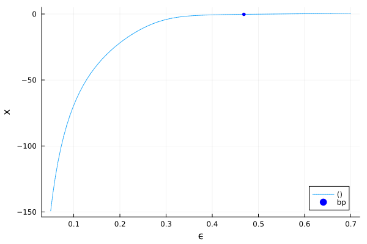
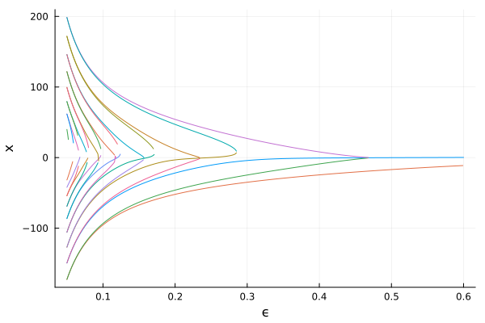
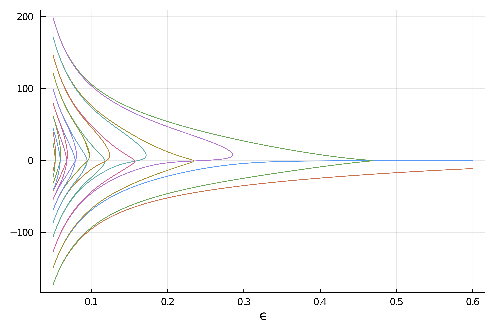

🟡 Deflated continuation in the Carrier problem
Chapman, S. J., and P. E. Farrell. Analysis of Carrier’s Problem. ArXiv:1609.08842 [Math], September 28, 2016. http://arxiv.org/abs/1609.08842.
In this example, we study the following singular perturbation problem:
\[\epsilon^{2} y^{\prime \prime}+2\left(1-x^{2}\right) y+y^{2}=1, \quad y(-1)=y(1)=0\tag{E}.\]
It is a remarkably difficult problem which presents many disconnected branches which are not amenable to the classical continuation methods. We thus use the recently developed deflated continuation method which builds upon the Deflated Newton (see Deflated problems) techniques to find solutions which are different from a set of already known solutions.
We start with some import
using Reviseusing LinearAlgebra, SparseArrays, BandedMatricesusing BifurcationKit, Plotsconst BK = BifurcationKitand a discretization of the problem
function F_carr(x, p) (;ϵ, X, dx) = p f = similar(x) n = length(x) f[1] = x[1] f[n] = x[n] for i=2:n-1 f[i] = ϵ^2 * (x[i-1] - 2 * x[i] + x[i+1]) / dx^2 + 2 * (1 - X[i]^2) * x[i] + x[i]^2-1 end return fendfunction Jac_carr(x, p) (;ϵ, X, dx) = p n = length(x) J = BandedMatrix{Float64}(undef, (n,n), (1,1)) J[band(-1)] .= ϵ^2/dx^2 # set the diagonal band J[band(1)] .= ϵ^2/dx^2 # set the super-diagonal band J[band(0)] .= (-2ϵ^2 /dx^2) .+ 2 * (1 .- X.^2) .+ 2 .* x # set the second super-diagonal band J[1, 1] = 1.0 J[n, n] = 1.0 J[1, 2] = 0.0 J[n, n-1] = 0.0 JendJac_carr (generic function with 1 method)We can now use Newton to find solutions:
N = 200X = LinRange(-1,1,N)dx = X[2] - X[1]par_car = (ϵ = 0.7, X = X, dx = dx)sol0 = -(1 .- par_car.X.^2)recordFromSolution(x, p; k...) = (x[2]-x[1]) * sum(z->z^2, x)prob = BifurcationProblem(F_carr, zeros(N), par_car, (@optic _.ϵ); J = Jac_carr, record_from_solution = recordFromSolution, R01 = BK.FiniteDifferences() # for normal form computation )optnew = NewtonPar(tol = 1e-8)sol = @time BK.solve(prob, Newton(), optnew, normN = norminf) 0.000138 seconds (83 allocations: 145.844 KiB)First try with automatic bifurcation diagram
We can start by using our Automatic bifurcation method.
optcont = ContinuationPar(dsmin = 0.001, dsmax = 0.05, ds= -0.01, p_min = 0.05, plot_every_step = 10, newton_options = NewtonPar(tol = 1e-8), max_steps = 300, nev = 40, n_inversion = 4)diagram = bifurcationdiagram(prob, # particular bordered linear solver to use # BandedMatrices. PALC(bls = BorderingBLS(solver = DefaultLS(), check_precision = false)), autodiff = false, 2, optcont)scene = plot(diagram)
However, this is a bit disappointing as we only find two branches.
Second try with deflated continuation
# deflation operator to hold solutionsdeflationOp = DeflationOperator(2, dot, 1.0, [sol.u])# parameter values for the problempar_def = @set par_car.ϵ = 0.6# newton optionsoptdef = setproperties(optnew; tol = 1e-7, max_iterations = 200)# function to encode a perturbation of the old solutionsfunction perturbsol(sol, p, id) # we use this sol0 for the boundary conditions sol0 = @. exp(-.01/(1-par_car.X^2)^2) solp = 0.02*rand(length(sol)) return sol .+ solp .* sol0end# encode the deflated continuation algoalg = DefCont(deflation_operator = deflationOp, perturb_solution = perturbsol, max_branches = 40)# call the deflated continuation methodbr = @time continuation( re_make(prob; params = par_def), alg, setproperties(optcont; ds = -0.001, dsmin=1e-5, max_steps = 20000, p_max = 0.7, p_min = 0.05, detect_bifurcation = 0, plot_every_step = 40, newton_options = setproperties(optnew; tol = 1e-9, max_iterations = 100, verbose = false)); plot = false, normC = norminf, verbosity = 0, )plot(br)
We obtain the following result which is remarkable because it contains many more disconnected branches which we did not find in the first try.
If we use a smaller parameter step, we get more branches. We don't do it here because the docs run on github CI and is resource limited.
br = @time continuation( re_make(prob; params = par_def), alg, setproperties(optcont; ds = -0.0001, dsmin=1e-5, max_steps = 20000, p_max = 0.7, p_min = 0.05, detect_bifurcation = 0, plot_every_step = 40, newton_options = setproperties(optnew; tol = 1e-9, max_iterations = 100, verbose = false)); normC = norminf, verbosity = 0, )plot(br)